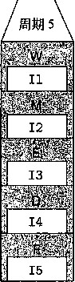

流水线寄存器的输入（点4)。当时刻360时钟上升时，各条指令会前进经过一个流水线阶
EG-
时钟
11
个 /360
A
12
13
时间120 ①时间=239
100 ps 20 ps 100 ps 20 ps 100 ps
20 ps
组食 |
寄 |
组合 |
寄 |
||||
謂 |
鍵♦ |
逻辑 |
=t> |
存 |
|||
-f * |
器 |
C |
器 |
②时间-241
100 ps
20 ps 100 ps 20 ps 100 ps
|
组合 |
组合 |
I |
组合 |
寄 |
|||||
|
逻辑 |
=[)0 |
逻辑 |
=^> |
1 |
逻辑 |
=> |
|||
|
A |
B |
翁 i |
C |
器 |
③时间=300
100 ps 20 ps
ll 寄存器
100.ps 20 ps
?存，,乂
④时间=359
100 ps 20 ps
合 :纖 A
图4-35流水线操作的一个时钟周期。在时刻240 (点1)肘钟上升之前，指f II (用深灰色表示）和 12已经完成了阶段B和A。在时钟上升后，这些指令开始传送到阶段C和B,而指令13 (用 ,浅灰色表示)开始经过阶段A ( 辱 2:和3) 9 就在时钟开始再次上升之前,这些指令的结果就 会传到流水线寄存器的输A (点:4)
从这个对流水线操作详细的描述中，我丨门可以看到鹌缓时钟不会影响流水线的行为。信号 ： 传 播到流水线寄存器的输入,但是直到时钟上并时才会改变秦存器的状态。另一方面，如果时钟运 行得太快，就会有灾5f|性的居果。值可能会来不及通过组合逻辑，#且当时钟上升时,寄存器的
输入还不是合法的值。
根据对SEQ处理器时序的讨论（见4.3.3节)，我们看到这种组合逻辑块之间釆用时钟寄存 器的简单机制，足够控制流水线中的指令流。随着时钟周而复始地上升和下降，不同的指令就会 通过流水线的各个阶段，不会相互干扰。
流水线的局限性
图4-33的例子是一个理想的流水线化的系统，在这个系统中，我们可以将计算分成三个相 互独立的阶段，每个阶段需要的时间是原来逻辑需要时间的三分之一。不幸的是，会出现其他一 些因素，降低流水线的效率。
1 .不一致的划分
图4-36展示的系统和前面一样，我们将计算划分为了三个阶段，但是通过这些阶段的延 迟从50ps到150ps不等。通过所有阶段的延迟之和仍然为300ps。不过，运行时钟的速率是由 最慢阶段的延迟限制的。流水线图表明，每个时钟周期，阶段A都会空闲（用白色方框表示) lOOps,而阶段C会空闲50ps。只有阶段B会一直处于活动状态。我们必须将时钟周期设为 150+20=170ps,得到吞吐量为5.88 GIPS。另外，由于时钟周期减慢了，延迟也增加到了 510ps。
150 ps
器
寄
存一 ►
20 ps 100 ps
20 ps
一 |延迟=
2吞吐量 器
50 ps 20 ps
组合
纖
；c
510 ps =5.88 GIPS
时钟
a)硬件：三阶段流水线，不一致的阶段延迟
|
_ |
_轉 |
||
|
lM 賴麵 |
Ml I |
||
时间 ^
b)流水线图
图4-36由不一致的阶段延迟造成的流水线技术的局限性。系统的吞吐量受最慢阶段的速度所限制
对硬件设计者来说,将系统计算设计划分成一组具有相同延迟的阶段是一个严峻的挑战。通 常，处理器中的某些硬件单元，如ALU和存储器，是不能被划分成多个延迟较小的单元的。这 就使得创建一组平衡的阶段非常困难。在设计流水线化的Y86处理器时，我们不会过于关注这 一层次的细节，但是理解时序优化在实际系统设计中的重要性还是非常必要的。
练习题 4.26假设我们分析图4-32中的组合逻辑，认为它可以分成6个块，依次命名为A〜F，延 迟分别为80、30、60、50、70和10ps,如下图所示：
80 ps 30 ps 60 ps 50 ps 70 ps 10 ps 20 ps
■ ^ |
v . •… ,- |
寄 |
||||||||||
A |
存 |
|||||||||||
器 |
时钟
在这些块之间插入流水线寄存器，就得到这一设计的流水线化的版本。根据在哪里插入流水线寄 存器，.会出现不同的流水线深度（有多少个阶段）和最大吞吐量的姐合。假设每个流水线寄存器的延 迟为20ps D
只插入一个寄存器，得到一个二阶段的流水线。要使吞吐量最大化，应该在哪里插入寄存器呢？吞 吐量和延迟是多少？
要使一个三阶段的流水线的吞吐量最大化，应该将两个寄存器插在哪里呢？吞吐量和延迟是多少？
要使一个四阶段的流水线的吞吐量最大化，应该将三个寄存器插在哪里呢？吞吐量和延迟.是多少？
要得到一个吞吐量最大的设计，至少要有几个阶段？描述这个设计及其吞吐量和延迟。
2. 流水线过深，收益反而下降
图4-37说明了流水线技术的另一个局限性。在这个例子中，我们把计算分成了 6个阶段, 每个阶段需要50ps。在每对阶挺之间插人流水线寄存器就得到了一个六阶段流水线。这个系统 的最小时钟周期为50+20=70ps,吞吐量为14.29 GIPS。因此,逋过将流水线的阶段数加倍，我 们将性能提高了 14.29/8.33=1.71。虽然我们将每个计算时钟如时间缩短了两倍，但是由午通过流 水线寄存器的延迟，吞吐量并没有加倍。这个延迟成了流水线吞吐量的一个制约因素。在我们的 新设计中，这个延迟占到了整个时钟周期的28.6%。
50 ps 20 ps 50 ps 20 ps 50 ps 20 ps 50 ps 20 ps 50 ps 20 ps 50 ps 20 ps
寄
存
器
k 合 ; 遂辑
组奋
«3»
合属
驾3
组合
麵
m
嗤
存唪
♦
器
器
延迟=420ps,吞吐量=14.29 GIPS
图4-37由开销造成的流水线技术的局限性。在组食逻辑被分成较小的块时，由寄存器更新引起的延 迟就成为了一个限制因素 ••、
为了提高时钟频率，现代处理器釆用了很深的（15或更多的阶段）流水线。处理器架构师 将指令的执行划分成很多非常简单的步骤，这样一来每个阶段的延迟就很小。电路设计者小心地 设计流水线寄存器，使其延迟尽可能小。芯片设计者也必须小心地设计时钟传播网络，以保证时 钟在整个芯片上同时改变。所有这些都是设计高速微处理器面临的挑战。
_练习题4.27让我们来看看图4>32:中的系统_，假设将它划分成任意数董的流水线阶段h每个阶段有 相同的延迟300从，每个流水钱寄存器的延迟为20ps。
系统的延迟和吞吐董写’成^的.函数是什么？ ^
吞吐量的上限等于多少？「
带反馈的流水线系统
人或者指令，相 相邻指令之间很
到目前为止，我们只考虑一种系统，其中传过流水线的对象，无论是汽车、 互都是完全独立的。但是，对于像IA32或Y§6这样执行机群程序的系统来说， 可能是相关的。例如，考虑下面这个Y86指令序列：
irmovl $50,
mrmovl 100( (%ebx) ), %edx
irmovl $50,°/ 0 eax
addl %eax,%ebx
mrmovl 100 (°/ 0 ebx) , %edx
在这个包含三条指令的序列中，每对相邻的指令之间都有数 据相关 （data dependency), 用圈起来的寄存器名字和它们之间的箭头来表示。irmovl指令（第1行）将它的结果存放 在％68<中，然后addl指令（第2行）要读这个值；而addl指令将它的结果存放在％的％ 中，mrmovl指令（第3行）要读这 个值。
另一种相关是由于指令控制流造成的顺序相关。来看着下面这个Y86指令序列 ：
loop:
subl %edx,%ebx
jne targ
irmovl $10,%edx
jmp loop
targ:
halt
jne指令（第3行）产生了 一个控制相关 （control dependency)，因为条件测试的结果会决 定要执行的新指令是irmovl指令（第4行）还是halt指令（第7行）。在我们的SEQ设计 中，这些相关都是由反馈路径来解决的 ， 如图4-22的右边 所示。 这些反馈将更新后的寄存器值 向下传送到寄存器文件，將新的PC值向下传送到PC寄存器。
图4-38举例说明了将流水线引入含有反馈路径的系统中的危险。在原来的系统（见图 4-38a)中，每条指令的结果都反馈给下一条指令。流水线图（见图4-38b)就说明了这个情况， II的结果成为12的输入 ， 依次类推。如果试图以最直接的方式将它转换成一个三阶段流水线 (见图4-38C),我们将改变系统的行为。如图4-38c所示，II的结果成为14的输人。为了通过流 水线技术加速系统，我们改变了系统的行为。
当我们将流水线技术引入Y86处理器时，必须正确处瑪反馈的影响。很明显 ， 像图4-38中 的例子那样改变系统的行为是无法接受的。我们必须以某种方式来处理指令间的数据和控制相 关，以使得到的行为与ISA定义的模型相符。
Y86 的流水线实现
我们终于做好准备开始本章的主要任务——设计一个流水线化的Y86处理器。首先，对顺 序的SEQ处理器做一点儿小的0C动，将PC的计算挪到取指阶段。然后，在各个阶段之间加上 流水线寄存器。到这个时候，我们的尝试还不能正确处理各种数据和控制相关。不过，做一些修
改，就能实现我们的目标 ^个高效的、流水线化的实现Y86 ISA的处理器。
SEQ +:重新安排计算阶段
作为实现流水线化设计的一个过渡步骤，我们必须稍微调整一下SEQ中五个阶段的顺序，使得 更新PC阶段在一个时钟周期开始时执行，而不是结束时才执行。只需要对整体硬件结构做最小的改 动， X 才于流水线阶段中的活动的时序，它能工作得更好。我们称这种修改过的设计为“SEQf”。
我们移动PC阶段，使得它的逻辑在时钟周期开始时活动，使它计算当前指令的PC值。图 4-39给出了 SEQ和SEQ+在PC计算上的不同之处。在SEQ中(见图4-39a), PC计算发生在 时钟周期结束的时候 ， 根据当前时钟周期内计算出的信号值来计算PC寄存器的新值。在SEQ+中 (见图4»39b)，我们创建状态寄存器来保存在一条指令执行过程中计算出来的信号。然后，当一个 新的时钟周期开始时，这些信号值通过同样的逻辑来计算当前指令的PC。我们将这些寄存器标号为 “plcode”、“pCnd” 等等， 来指明在任一给定的周期，它们保存的是前一个周期中产生的控制信号。
寄 |
||||
~► |
组合逻辑 |
存 |
||
■ ,‘ '. • -• . -: • V '- : , ' |
器 |
|||
a)硬件：未流水线化，带反馈
丨::
11
13
M
时间
b)流水线图
C) 硬件：带反馈的三阶段流水线
II I M M
^
13
时间
d)流水线图
图4-38由逻辑相关造成的流水线技术的局限性。在从未流水线化的带反馈的系统（a)转化到流水线 化的系统（c)的过程中，我们改变了它的计算行为，可以从两个流水线图（b和d)中看出来
icode Cnd valC valM valP
SEQ的新PC计算 图4>39移动计算PC的时间。在SEQ+中，
PC
|
1 ^ |
t | ^ |
|
|
plcode Cnd pValM pValC |
pValP |
|
SEQ+的PC选择
我们将计算当前状态的程序计数器的值作为指令执行的第一步
图4-40是SEQ+硬件更为详细的说明。可以看到，其中的硬件单元和控制块与我们在SEQ 中用的（图4-23) —样，只不过PC逻辑从上面（在时钟周期结束时活动）移到了下面（在时钟 周期开始时活动h
SEQ+ 中的 PC 在哪里
SEQ+有一个很奇怪的特性，那就是没有硬件寄存器来存放程序计数器。而是根据从前一 条指令保存下来的一些状态信息动态地计算PC。这就是一个小小的证明——我们可以以一种与 ISA隐含着的概念模型不同的方式实现处理器,只要处理器能正确执行任意的机器语言程序。我 们不需要按照程序员可见的状态表明的方式来对状态进行编码，只要处理器能正确地执行任意的 机器语言程序。我们不需要将状态编码成程序员可见的状态指定的形式，只要处理器能够为任意 的程序员可见状态（例如程序计数器）产生正确的植。在创建流水线化的设计中，我们会更多地 使用到这条原则。5.7节中描述的乱序（out-of-order)处理技术，以一种完全不同于机器级程序 中出现顺序的次序来执行指令，将这一思想发挥到了极致。
SEQ到SEQ+中对状态元素的改变是一种通用的改进的例子，这种改进称为电路重定时 (circuit retiming) [65]。重定时改变了一个系统的状态表示，但是并不改变它的逻辑行为。通常 用它来平衡一个系统中各个阶段之间的延迟。
解码
(^IP)
PC
增加
(PC)
plcode |
pCnd |
pValM |
pValC |
pValP |
图4-40 SEQ+的硬件结构。将PC计算从时钟周期结束时移到了开始时，使之更适合于流水线
4.5.2插入流水线寄存器
在创建一个流水线化的Y86处理器的最初尝试中,我们要在SEQ+的个阶段之间插入流 水线寄存器，并对信号重新排列，得到PIPE-处理器，这里的“-”代表这个处理器和最终的处 理器设计相比,性能要差一点。PIPE-的抽象结构如图4-41所示。流水线寄存器在该图中用黑 色方框表示，每个寄存器包括不同的字段，用白色方框表示。正如多个字段表明的那样，每个流 水线寄存器可以存放多个字节和字。同两个顺序处理器的硬件结构（见图4-23和图4-40)中的 圆角方権不同，这些白色的方框表示实际的硬件组成。
图4-41 PIPE-的硬件结构，一个初始的流水线化实现。通过往SEQ+ (图4-40)中插入流水线寄存 器，我们创建了一个五阶段的流水线。这个版本有几个缺陷，稍后就会解决这些问题
可以看到，PIPE-使用的硬件单元与顺序设计SEQ (图4-40)几乎一样，只是有流水线寄 存器分隔开这些阶段。两个系统中信号的不同之处在4.5.3节中讨论。
流水线寄存器按以下方式标号：
F保存程序计数器的预测值，稍后讨论。
D位于取指和译码阶段之间。它保存关于最新取出的指令的信息，即将由译码阶段进行处理。 E位于译码和执行阶段之间。它保存关于最新译码的指令和从寄存器文件读出的值的信 息，即将由执行阶段进行处理。
M位于执行和访存阶段之间。它保存最新执行的指令的结果，即将由访存阶段进行处理。
它还保存关于用于处理条件转移的分支条件和分支目标的信息。
W位于访存阶段和反馈路径之间，反馈路径将计算出来的值提供给寄存器文件写，而当完 成ret指令时，它还要向PC选择逻辑提供返回地址。
图4-42表明以下代码序列如何通过我们的五阶段流水线，其中注释将各条指令标识为 II〜15以便引用：
$l,7 0 eax # II $2,°/ 0 ebx # 12
$3,%ecx # 13
$4,°/ 0 edx # 14
# 15
irmovl
irmovl
irmovl
irmovl
halt
图的右边是这个指令序列的流水线图。同4.4节中简单流水线化的计算单元的流水线图一 样，这个图描述了每条指令通过流水线各个阶段的行进过程，时间从左往右增大。上面一条数字 表明各个阶段发生的时钟周期。例如，在周期1取出指令II,然后它开始通过流水线各个阶段, 到周期5结束后，其结果写入寄存器文件。在周期2取出指令12,到周期6结束后，其结果写 回，以此类推。在图的最下面，是当周期为5时的流水线的扩展图。此时，每个流水线阶段中各 有一条指令。
从图4-42中还可以判断我们画处理器的习惯是合理的，这样，指令是自底向上的流动的。 周期5时的扩展图表明的流水线阶段，取指阶段在底部，写回阶段在最上面，同流水线硬件图 (见图4-41)表明的一样。如果看看流水线个阶段中指令的顺序，就会发现它们出现的顺序与 在程序中列出的顺序一样。因为正常的程序是从上到下列出的 , 我们保留这种顺序,让流水线从 下到上进行。在使用本书附带的模拟器时 ， 这个习 愦会特别有用 。
4.5.3 对信号进行重新排列和标号 '
顺序实现SEQ和SEQ+在一个时刻只处理一条指令，因此诸如valC、srcA和valE这样的信 号值有唯一的值。在流水线化的设计中，与各个指令相关联的这些值有多个版本，会随着指令一 起流过系统。例如，在PIPE-的详细结构中，有4个标号为“stat”的白色方框，保存着4条不 同指令的状态码（参见图4-41)。我们需要很小心以确保使用的是正确版本的信号，否则会导致 很严重的错误，例如将一条指令计算出的结果存放到了另一条指令指定的目的寄存器中。我们釆 用的命名机制，通过在信号名前面加上大写的流水线寄存器名字作为前缀，存储在流水线寄存 器中的信号可以唯一的被标识。例如，4个状态码可以命名为D—stat、E一stat、M_stat和W_stet。 我们还需要引用某些在一个阶段内刚刚计算出来的信号。它们的I名是在信号名前面加上小写的 P介段名的第一个字母作为前缀。以状态码为例，可以看到在取指和访存阶段中标号为“stat”的 控制逻辑块。因而，这些块的输出被命名为f_stat和m一stat。我们还可以看到整个处理器的实际 状态Stat是根据流水线寄存器W中的状态值，由写回阶段中的块计算出来的。
6 7 8 9
#11
#12
#13
#14
#15
F f |
D |
E |
M .； |
|||||
F |
D |
E |
W |
|||||
R |
D ： |
|||||||
各 : |
雜: |
E_ ； \ |
W |
|||||
D |
M |
W |
||||||

irmovl $l,%eax
irmovl $2，％ebx
irmovl $3,%ecx
irmovl $4，％edx
halt
图4-42指令流通过流水线的示例 .
信号 M_stat 和 m_stat 的差别
在命名系统中，大写的前缀“D”、“E”、“M”和“W”指的是流水线寄存器，所以M_stat 指的是流水线寄存器M的状态码字段。小写的前綴“f”、“d”、“e”、“m”和“w”指的是流水 线阶段，所以m 一 stat指的是在访存阶段中由控制逻辑块产生出的状态信号。
理解这个命名规则对理解我们的流水线化的处理器的操作是至关重要的。
SEQ+和PIPE-的译码阶段都产生信号dstE和dstM,它们指明值valE和valM的目的 寄存器。在SEQ+中，可以将这些信号直接连到寄存器文件写端口的地址输人。在PIPE-中， 会在流水线中一直携带这些信号穿过执行和访存阶段，直到写回阶段才送到寄存器文件（如各个 阶段的详细描述所示)。我们这样做是为了确保写端口的地址和数据输入是来自同一条指令。否 则，会将处于写回阶段的指令的值写入，而寄存器ID却来自于处于译码阶段的指令。作为一条 通用原则，我们要保存处于一个流水线阶段中的指令的所有信息。
PIPE-中有一个块在相同表示形式的SEQ+中是没有的，那就是译码阶段中标号为“Select A”的块。我们可以看出，这个块会从来自流水线寄存器D的valP或从寄存器文件A端口中 读出的值中选择一个,作为流水线寄存器E的值valA。包含这个块是为了减少要携带给流水线 寄存器E和M的状态数量。在所有的指令中，只有call在访存阶段需要valP的值。只有跳 转指令在执行阶段（当不需要进行跳转时）需要valP的值。而这些指令又都不需要从寄存器文 件中读出的值。因此我们合并这两个信号，将它们作为信号valA携带穿过流水线，从而减少 流水线寄存器的状态数量。这样做就消除了 SEQ (见图4-23)和SEQ+ (见图4-40)中标号为 “Data”的块，这个块完成的是类似的功能。在硬件设计中，像这样仔细确认信号是如何使用的， 然后通过合并倩号来减少寄存器状态和线路的数量，是很常见的。
如图4-41所示,我们的流水线寄存器包括一个状态码Stat字段，开始时是在取指阶段计算 出来的，在访存阶段有可能会被修改。在讲完正常指令执行的实现之后，我们会在4.5.9节中讨
论如何实现异常事件的处理。到目前为止我们可以说，最系统的方法就是让与每条指令关联的状 态码与指令一起通过流水线，就像图中表明的那样。
4.5.4 预测下一个 PC •
在PIPE-设计中，我们釆取了一些措施来正确处理控制相关。流水线化设计的目的就是每 个时钟周期 都发射 一条新指令，也就是说每个时钟周期都有一条新指令进入执行阶段并最终完 成。要是达到这个目的就意味着吞吐量是每个时钟周期一条指令。要做到这一点，我们必须在取 出当前指令之后，马上确定下一条指令的位置。不幸的是，如果取出的指令是条件支指令，要 到几个周期后 ， 也就是指令通过执行阶段之后，我们才能知道是否要选择分支。类似地 ， 如果取 出的指令是ret,要到指令通过访存阶段，才能确定返回地址。
除了条件转移指令和ret以外，根据取指阶段中计算出的信息，我们能够确定下一条指令 的地址。对于call和jmp (无条件转移）来说，下一条指令的地址是指令中的常数字valC, 而对于其他指令来说就是valP。因此，通过预测PC的下一个值，在大多数情况下，我们能达 到每个时钟周期发射一条新指令的目的。对大多数指令类型来说，我们的预测是完全可靠的。对 条件转移来说，我们既可以预测选择了分支，那么新PC值应为valC,也可以预测没有选择分 支，那么新PC值应为valP。无论哪种情况，我们都必须以某种方式来处理预测错误的情况， 因为此时已经取出并部分执行了错误的指令。我们会在4.5.11节中再讨论这个问题。
猜测分支方向并根据猜测幵始取指的技术称 为分支预测。 实际上所有的处理器都釆用了此类 技术的某种形式。对于预测是否选择分支的有效策略已经进行了广泛的研究[49, 2.3节]。有的 系统花费了大量硬件来解决这个任务。我们的设计只使用了简单的策略，即总是预测选择了条件 分支，因而预测PC的新值为valC。
其他的分支预测策略
我们的设计使用总是选择 （always taken) 分支的预测策略。研究表明这个策略的成功率大 约为 60%[47, 120]。 相反，从不选择 （never taken, NT) 策略的成功率大约为 40%。 稍微复杂 一点的是反向选择、正向不选择 （backward taken, forward not-taken, BTFNT) 的策略 ， 当分支 地址比下一条地址低时就预测选择分支，而分支地址比较高时 ， 就预测不选择分支。这种策略的 成功率大约为 65%。 这种改进源自一个事实，即循环是由后向分支结束的 ， 而循环通常会执行 多次。前向分支用于条件操作，而这种选择的可能性较小。在家庭作业 4.54 和 4.55 中，你可以 修改 Y86 流水线处理器来实现 NT 和 BTFNT 分支预测策略。
正如我们在 3.6.6 节中看到的，分支预测错误会极大地降低程序的性能，因此就促使我们在 可能的时候，要使用条件数据传送而不是条件控制转移。
我们还没有讨论预测ret指令的新PC值。同条件转移不同，此时可能的返回值几乎是无限 的，因为返回地址位于栈顶的字，其内容可以是任意的。在设计中，我们不会试图对返回地址做 任何预测。只是简单地暂停处理新指令，直到ret指令通过写回阶段。在4.5.11节，我们将回 来讨论这部分的实现。
使用栈的返回地址预测
对大多数程序来说，预测返回值艮容易 ， 因为过程调用和返回是成对出现的。大多数函数调 用，会返回到调用后的那条指令。高性能处理器运用了这个属性，在取指单元中放入一个硬件 栈，保存过程调用指令产生的返回地址。每次执行过程调用指令时，都将其返回地址压入栈中。 当取出一个返回指令时，就从这个栈中弹出顶部的值 ， 作为预测的返回值。同分支预测一样，在 预测错误时必须提供一个恢复机制 ， 因为还是有调用和返回不匹配的时候。通常，这种预测很可 靠。这个硬件栈对程序员来说是不可见的。
PIPE-的取指阶段，如图4-41底部所示,负责预测PC的下一个值，以及为取指选择实际 的PC。我们可以看到，标号为“Predict PC”的块会在PC增加器计算出的valP和取出的指令 中得到的valC中进行选择。这个值存放在流水线寄存器F中，作为程序计数器的预测值。标号 为“Select PC”的块类似于SEQ+的PC选择阶段中标号为“PC”的块（见图4-40)。它从三个 值中选择一个作为指令存储器的地祉：预测的PC,对于到达流水线寄存器M的不选择分支的指 令来说是valP的值（存储在寄存器M_valA中)，或是当ret指令到达流水线寄存器W (存储 在W_valM)时的返回地址的值。■
^我们在4.5.11节完成流水线控制逻辑时，会返回来处理跳转和返回指令。
流水线冒险
PIPE-结构是创建一个流水线化的Y86处理器的好开端。不过，回忆4.4.4节中的讨论，将 流水线技术引入一个带反馈的系统，当相邻指令间存在相关时会导致出现问题。在完成我们的设 计之前，必须解决这个问题。这些相关有两种形式：1)数据相关，下一条指令会用到这一条指 令计算出的结果；2)控制相关，一条指令要确定下一条指的位置，例如在执行跳转、调用或 返回指令时。这些相关可能会导git流水线产k计算错误，称 为冒险 （hazard)。同相关一样，冒 险也可以分为两类： 数据冒险 （date hazard) 和控制冒险 （control hazard)。本节关注的是数据冒 险。我们会将控制冒险作为整个流水线控制的一部分加以讨论（4.5.11节)。
图4-43 progl的流水线化的执行，没有特殊的流水线控制。在周期6中，第二个irmovl将结果写 入寄存器％0拉。addl指令在周期7读源操作数，因此得到的是％edx*%eax的正确值
周期？
iiilla
6 7 8 9 10 11
R[%eax]—~
valA+-R[%edx] = 10 valB <— R[ # /,eax] = 3
progl
0x000: |
irmovl $10//,edx |
0x006: |
irmovl $3,%eax |
0x00c: |
nop |
OxOOd: |
nop |
OxOOe: |
nop |
OxOOf: |
addl ®/«edx, %eax |
0x011: |
halt |
图4-43描述的是PIPE-处理器处理progl指令序列的情况。假设在这个例子以及后面的 例子中，程序寄存器初始值都为0。这段代码将值10和3放入程序寄存器％6&和％%¥，执行 3条nop指令，然后将寄存器％edx加到％eax。我们重点关注两条irmovl指令和addl指令 之间的数据相关导致的可能的数据冒险。图的右边是这个指令序列的流水线图。图中重点显示 了周期6和7的流水线阶段。流水线图的下面是周期6中写回活动和周期7中译码活动的扩展 说明。在周期7开始以后，两条irmovl都已经通过写回阶段，所以寄存器文件保存着更新过 的^(^和％ 6 肛的值。因此，当addl指令在周期7经过译码阶段时，它可以读到源操作数的 正确值。在此示例中，两条irmovl指令和addl指令之间的数据相关没有造成数据冒险。
我们看到progl通过流水线并得到正确的结果，因为3条nop指令在有数据相关的指令 之间创造了一些延迟。让我们来看看如果去掉这些nop指令会发生些什么。图4-44描述的是 prog2程序的流水线流程，在两条产生寄存器％edx和 %eax 值的irmovl指令和以这两个寄 存器作为操作数的addl指令之间有两条nop指令。在这种情况下，关键步骤发生在周期 6 ，此 时addl指令从寄存器文件中读取它的操作数。该图底部是这个周期内流水线活动的扩展描述。 第一个irmovl指令已经通过了写回阶段，因此程序寄存器％edx已经在寄存器文件中更新了。 在该周期内，第二个irmovl指令处于写回阶段,因此对程序寄存器％eax的写要到周期7开 始，时钟上升时，才会发生。结果会读出％eax的错误值（回想我们假设所有的寄存器的初始 值为0),因为对该寄存器的写还未发生。很明显，我们必须改进流水线让它能够正确处理这样 的冒险。
# prog2 123456789 i0
0x000: |
irmovl $10,%edx |
F |
D |
E |
M |
W |
|||||
0x006: |
irmovl $3,%eax |
F |
D |
E |
M |
* |
|||||
0x00c: |
nop |
F |
D |
E |
w |
||||||
OxOOd: |
nop |
F |
D |
纖 |
M |
W |
|||||
OxOOe: |
addl %edx,%eax |
F |
m |
E |
M |
W |
|||||
0x010: |
halt |
m |
D |
E |
M |
W |
|||||
離值
valA—R[%edx] = va 旧 R[%eax] = 0
图4-44 prog2的流水线化的执行，没有特殊的流水线控制。直到周期7结束时，对寄存器％eax 的写才发生，所以addl指令在译码阶段读出的是该寄存器的错误值
图4-45是当irmovl指令和addl指令之间只有一条nop指令，即为程序prog3时，发 生的情况。现在我们必须检查周期5内流水钱的行为，此时addl指令通过译码阶段。不幸 的是，对寄存器％ 0 (^的写仍处在写回阶段，而对寄存器％eax的写还处在访存阶段。因此, addl指令会得到两个错误的操作数。
图4-46是当去掉irmovl指令和addl指令间的所有nop指令，即为程序prog4时，发 生的情况。现在我们必须检查周期4内流水线的行为，此时addl指令通过译码阶段。不幸的 是，对寄存器％edx的写仍处在访存阶段，而执行阶段正在计算寄存器％eax的新值。因此, addl指令的两个操作数都是不正确的。
这些例子说明，如果一条指令的操作数被它前面三条指令中的任意一条改变的话，都会出现数 据冒险。之所以会出现这些冒险，是因为我们的流水线化的处理器是在译码阶段从寄存器文件中读 取指令的操作数，而要到三个周期以后，指令经过写回阶段时，才会将指令的结果写到寄存器文件。
D
E ?
E
W
W
# prog3
OxOOG: irmovl $10,°/,edx 0x006: irmovl $3，％eax 0x00c: nop
OxOOd: addl %edx,%eax OxOOf: halt
周斯 5
R[%edx 卜一 10
M_valE = 3 M一dstE = %eax
图4-45 prog3的流水线化的执行，没有特殊的流水线控制。在周期5, addl指令从寄存器文件中读 源操作数。对寄存器％0&的写仍处在写回阶段，而对寄存器％eax的写还在访存阶段。两 个操作数valA和valB得到的都是错误值
# prog4 1 2 3 4 5 6 7 8
0x000: irmovl $10,%edx |
F |
D |
E |
ill |
w |
|||
0x006: irmovl- $3,%eax |
F |
D |
M |
W |
||||
0x00c: addl %edx,%eax |
F |
E |
M |
W |
||||
OxOOe; halt |
絮 :. |
D |
E |
M |
W |
周期 4
M
=10 =%edx
M_valE : M一dstE
e一va 旧和 0 + 3 : E_dstE = %eax
valA R[%edx] = 0 A valB^- R[%eax] =
图4-46 prog4的流水线休的执行，没有特殊的流水线控制。在周期4, addl 指令从 寄存器文件中 读源操作数。对寄存器％edx的写仍处在访存阶段，而执行阶段正在计算寄存器％eax的新 值。两个操作数valA和valB得到的都是错误值
列举数据冒险的类型
当一条指令更新后面指令会读到的那些程序状态时，就有可能出现冒险。对于Y86来说， 程序狀态包括程序寄存器、程序计数器、存储器、条件码寄存器和状态寄存器。让我们来看看在 提出的设计中每类状态出现冒险的可能性。
程序寄存器：我们已经认识这种冒险了。出现这种冒险因为寄存器文件的读写是在不同的阶 段进行的，导致不同指令之间可能出现不希望的相互作用。
程序计数器：更新和读取程序计数器之间的冲突导致了控制冒险。当我们的取指阶段逻辑 在取下一条指令之前，正确预测了程序计数器的新值时，就不会产生冒险。预测错误的分支和 ret指令需要特殊的处理，会在4.5.11节中讨论。
存储器 ：对数据存储器的读和写都发生在访存阶段。在一条读存储器的指令到达这个阶段之 前，前面所有要写存储器的指令都已经完成这个阶段。另外，在访存阶段中写数据的指令和在取 指阶段中读指令之间也有冲突，因为指令和数据存储器访问的是同一个地址空间。只有包含自我 修改代码的程序才会发生这种情况，在这样的程序中，指令写存储器的一部分，过后会从中取出 指令。有些系统有复杂的机制来检测和避免这种冒险，而有些系统只是简单地强制要求程序不应 该使用自我修改代码。为了简便，假设程序不能修改自身，因此我们不需要采取特殊的措施，根 据在程序执行过程中对数据存储器的修改来修改指令存储器。
条件码寄存器 ：在执行阶段中，整数操作会写这些寄存器。条件传送指令会在执行阶段以及 条件转移会在访存阶段读这些寄存器。在条件传送或转移到达执行阶段之前，前面所有的整数操 作都已经完成这个阶段，所以不会发生冒险。
状态寄存器：指令流经流水线的时候，会影响程序状态。我们采用流水线中的每条指令都与 一个状态码相关联的机制，使得当异常发生时，处理器能够有条理地停止，就像在4.5.9节中会 讲到的那样。
这些分析表明我们只需要处理寄存器数据冒险、控制冒险，以及确保能够正确处理异常。当 设计一个复杂系统时,这样的分类分析是4艮重要的。这样做可以确认出系统实现中可能的困难， 还可以指导生成用于检查系统正确性的测试程序 。
4.5.6用暂停来避免数据冒险
暂停（stalling)是避免冒险的一种常用技术，暂停时，处理器会停止流水线中一条或多条指 令，直到冒险条件不再满足。让一条指令停顿在译码阶段 ， 直到产生它的源操作数的指令通过 了写回阶段，这样我们的处理器就能避免数据 冒险。 这种机制的细节会在4.5.11节讨论。它对流 水线控制逻辑做了一些简单的加强。图4-47 ( P rog2)和图4-48 (prog4)画出了暂停的效果。 (在这里的讨论中我们省略了 prog3,因为它的运行类似于其他两个例子。）当指令addl处于 译码阶段时，流水线控制逻辑发现执行、访存或写回阶段中至少有一条指令会更新寄存器％edx 或％63乂。处理器不会让addl指令带着不正确的结果通过这个阶段，而是会暂停指令，将它阻 塞在译码阶段，时间为一个周期（对 P rog2来说）或者三个周期（对prog4来说)。对所有这 三个程序来说 ， addl指令最终都会在周期7中得到两个源操作数的正确值，然后继续沿着流水 线进行下去。
将addl指令阻塞在译码阶段时，我们还必须将紧跟其后的halt指令阻塞在取指阶段。通 过将程序计数器保持不变就能做到这一点，这样一来，会不断地对halt指令进行取指，直到暂 停结束。
暂停技术就是让一组指令阻塞在它们所处的阶段 ， 而允许其他指令继续通过流水线。那么在 本该正常处理addl指令的阶段中 ， 我们该做些什么呢？我们使用的处理方法是：每次要把一条 指令阻塞在译码阶段 ， 就在执行阶段插入一个气泡。气泡就像一个自动产生的nop指令 —— 它 不会改变寄存器、存储器、条件码或程序状态。在图4-47和图4-48的流水线图中，白色方框表 示的就是气泡。在这些图中，我们用一个addl指令的标号为“D”的方框到标号为“E”的方 框之间的箭头来表示一个流水线气泡，这些箭头表明，在执行阶段中插入气泡是为了替代addl 指令，它本来应该经过译码阶段进入执行阶段。在4.5.11节，我们将看到使流水线暂停以及插入 气泡的详细机制。
2 r* ^ Ft , |
mj |
! i ; E 、 |
m ^ |
% |
p |
y e i |
\'m |
||
d |
||||
： |
w;
# prog2
0x000: irmovl $10,%edx 0x006: irmovl $3,%eax 0x00c: nop OxOOd: nop
bubble
10
丨E:
:Wf
M
OxOOe: addl %edx,%eax |
[Lh |
凡 |
是: |
見 ' |
|||
0x010: halt |
r K ^ V |
: |
* w |
图4-47 prog2使用暂停的流水线化的执行。在周期6中对addl指令译码之后，暂停控制逻辑发现 一个数据冒险，它是由写回阶段中对寄存器％eax未进行的写造成的。它在执行阶段中插入 一个气泡，并在周期7中重复对指令addl的译码。实际上，机器是动态地插人一条nop指 令，得到的执行流类似于progl的执行流（见图4-43)
9 10 11
;M;,V-:
1J -
D
w
M
M
'..c
響
# prog4
0x000: irmovl $10,°/ 0 edx 0x006: irmovl $3,%eax bubble bubble bubble 0x00c: addl %edx,%eax OxOOe: halt
图4-48 P rog4使用暂停的流水线化的执行。在周期4中对addl指令译码之后 ， 暂停控制逻辑发 现了对两个源寄存器的数据冒险。它在执行阶段中插人一个气泡，并在周期5中重复对指令 addl的译码。它再次发现对两个源寄存器的冒险，就在执行阶段中插入一个气泡，并在周 期6中重复对指令addl的译码。再次发现对寄存器％eax的冒险，就在执行阶段中插入 一个气泡，并在周期7中重复对指令addl的译码。实际上，机器是动态地插入3条nop指 令，得到的执行流类似于progl的执行流（见图4-43)
在使用暂停技术来解决数据冒险的过程中，我们通过动态地产生和progl流（见图4-43) 一样的流水线流，有效地执行了程序proQ2和prog4。为prog2插入一个气泡，为prog4插 入3个气泡 ， 与在第二条irmovl指令和addl指令之间有3条nop指令，有相同的效果。虽 然实现这一机制相当容易（参考家庭作业4.51),但是得到的性能并不好。一条指令更新一个寄 存器，紧跟其后的指令就使用被更新的寄存器，像这样的情况不胜枚举。这会导致流水线暂停长 达三个周期，严重降低了整体的吞吐量。
4.5.7用转发来避免数据冒险
我们PIPE-的设计是在译码阶段从寄存器文件中读入源操作数,但是对这些源寄存器的写
有可能要在写回阶段才能进行。与其暂停直到写完成，不如简单地将要写的值传到流水线寄存 器E作为源操作数。图4-49用 P rog2周期6的流水线图的扩展描述来说明了这一策略。译码 阶段逻辑发现，寄存器％eax是操作数valB的源寄存器，而在写端口 E上还有一个对％eax的 未进行的写。它只要简单地将提供到端口 E的数据字（信号W_valE)作为操作数valB的值, 就能避免暂停。这种将结果值直接从一个流水线阶段传到较^阶段的技术称为数据转发（data forwarding,或简称转发，有时称为旁路（bypassing))。它使prog2的指令能通过流水线而不需 要任何暂停。数据转发需要在基本的硬件结构中增加一些额外的数据连接和控制逻辑。
|
1 2 |
3 |
4 |
5 |
6 |
7 |
8 |
9 10 |
||